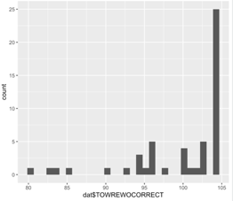

4 Week 12: Correlation 2
Written by Margriet Groen (partly adapted from materials developed by the PsyTeachR team a the University of Glasgow)
Today we will continue a look at correlation as a measure of association between two numerical variables. We will review assumptions associated with correlation, discuss some issues important to be aware of when interpreting correlation results and finally, we’ll talk about intercorrelation.
4.1 Lectures
The lecture material for this week is presented in two parts:
4.2 Reading
The reading that accompanies the lectures this week is (the same as last’s week) from the free textbook by Miller and Haden.
Chapter 10 gives you a brief overview of what correlation and regression are. Chapter 11 introduces correlation in more detail. Both chapters are really short but provide a good basis to understanding correlational analysis. Please note, in Chapter 10 you might encounter some terminology that is unfamiliar to you. It talks about ANOVA, which means Analysis of Variance and about GLM, which means General Linear Model. Having a quick look at Chapter 1 of Miller and Haden also helps with that.
4.3 Pre-lab activities
After having watched the lectures on correlation and read the textbook chapters you’ll be in a good position to try these activities. Completing them before you attend your lab session will help you to consolidate your learning and help move through the lab activities more smoothly.
4.3.1 Pre-lab activity 1: Online interactive tutorial to practise your data-wrangling skills
Data comes in lots of different formats. One of the most common formats is that of a two-dimensional table (the two dimensions being rows and columns). Usually, each row stands for a separate observation (e.g. a participant), and each column stands for a different variable (e.g. a response, category, or group). A key benefit of tabular data is that it allows you to store different types of data-numerical measurements, alphanumeric labels, categorical descriptors-all in one place.
It may surprise you to learn that scientists actually spend far more of time cleaning and preparing their data than they spend actually analysing it. This means completing tasks such as cleaning up bad values, changing the structure of tables, merging information stored in separate tables, reducing the data down to a subset of observations, and producing data summaries. Some have estimated that up to 80% of time spent on data analysis involves such data preparation tasks (Dasu & Johnson, 2003)!
Many people seem to operate under the assumption that the only option for data cleaning is the painstaking and time-consuming cutting and pasting of data within a spreadsheet program like Excel. We have witnessed students and colleagues waste days, weeks, and even months manually transforming their data in Excel, cutting, copying, and pasting data. Fixing up your data by hand is not only a terrible use of your time, but it is error-prone and not reproducible. Additionally, in this age where we can easily collect massive datasets online, you will not be able to organise, clean, and prepare these by hand.
In short, you will not thrive as a psychologist if you do not learn some key data wrangling skills. Although every dataset presents unique challenges, there are some systematic principles you should follow that will make your analyses easier, less error-prone, more efficient, and more reproducible.
In the online tutorial, you will see how data science skills will allow you to efficiently get answers to nearly any question you might want to ask about your data. By learning how to properly make your computer do the hard and boring work for you, you can focus on the bigger issues.
You’ll be practising the select(), filter(), mutate(), arrange(), group_by() and summarise() functions from the dplyr package.
You’ve used these functions before, but if you’d like to quickly remind yourself what they do, watch the video (~10 min) on Data wrangling: dplyr and pipes. As the title suggests, I also explain in the video what a ‘pipe’ (this thing: %>%) is and you’ll be practising with that as well.
If you’re ready to begin, go to the tutorial linked to below. There is no need to install or download anything. Each tutorial has everything you need to write and run R code, right in the tutorial.
- Working with Tibbles Practise how to extract values form a table, subset tables, calculate summary statistics, and derive new variables.
4.3.2 Pre-lab activity 2: Getting ready for the lab class
4.3.2.1 Get your files ready
Download the 122_week12_forStudents.zip file and upload it into the new folder in RStudio Server you created (see last week’s Pre-lab activity 4 for instructions on how to do that.
4.4 Lab activities
In this lab, you’ll gain understanding of and practice with:
- constructing and interpreting histograms and qq-plots
- constructing and interpreting a matrix of scatterplots
- running intercorrelation analysis and interpret the results
- correct for multiple comparisons when running intercorrelation analysis
- constructing a correlation matrix in APA format
- when and why to apply correlation analysis to answers questions in psychological science
4.4.1 Lab activity 1: Assumptions of Correlation Analysis
4.4.1.1 Question 1
Correlation would be an appropriate form on analysis for researchers interested in the relationship between:
- Dog (breed) and height (cm) of owner
- Speed of swimming (mph) and area of tank (cm)
- Number of cows sitting and rain fall (mm)
- Total llama saliva (ml) expelled and gender of visitors
- b and d
- b and c
4.4.1.2 Question 2
When would you use Spearman’s rho analysis instead of Pearson’s r?
- When there are clear outliers in the data
- When the data is not normally distributed
- When the relationship between X and Y is curvilinear
- a and b
4.4.1.3 Question 3
Using the histograms and qq-plots below, which of these variables satisfies the normality assumption? Explain your answers.
Histogram non-words

QQ-plot non-words

Histogram words 
QQ-plot words

Histogram vocabulary

QQ-plot non-words

4.4.1.4 Question 4
Why should correlation analysis not be conducted on variables with a curvilinear relationship?
4.4.2 Lab activity 2: Attitudes towards vaping
Great work so far! Now we really want to see what you can do yourself. In this activity we’ll use real data on implicit and explicit attitudes towards vaping. You’ll need the data file VapingData.csv and the R-script 122_wk12_labAct2_template.R that you downloaded when completing Pre-lab activity 2.
4.4.2.1 Background
Explicit attitudes were measured via a questionnaire where higher scores indicated a positive attitude towards vaping (VapingQuestionaireScore).
Implicit attitudes were measured through an Implicit Association Test (IAT) using images of Vaping and Kitchen utensils and associating them with positive and negative words.
The IAT works on the principal that associations that go together (that are congruent, e.g. warm and sun) should be quicker to respond to than associations that do not go together (that are incongruent, e.g. warm and ice). You can read up more on the procedure on the Noba Project which has a good description of the procedure under the section “Subtle/Nonsconscious Research Methods”.
For this exercise, you need to know that “Block 3” in the experiment tested reaction times and accuracy towards congruent associations, pairing positive words with Kitchen utensils and negative words with Vaping. “Block 5” in the experiment tested reaction times and accuracy towards incongruent associations, pairing positive words with Vaping and negative words with Kitchen Utensils. As such, if reaction times were longer in Block 5 than in Block 3 then people are considered to hold the view that Vaping is negative (i.e. congruent associations are quicker than incongruent associations). However, if reaction times were quicker in Block 5 than in Block 3 then people are considered to hold the view that Vaping is positive (i.e. incongruent associations were quicker than congruent associations). The difference between reaction times in Block5 and Block3 is called the participants’ IAT score.
4.4.2.2 Step 0: Clean your environment
Before you do anything else, when starting a new analysis, it is a good idea to empty the R environment. This prevents objects and variables from previous analyses interfering with the current one. You can do this by clicking on the broom icon at the top of the environment window, or you can use the code below.
TASK: Use the code snippet below to clear the environment. TIP: If you hover your mouse over the box that includes the code snippet, a ‘copy to clipboard’ icon will appear in the top right corner of the box. Click that to copy the code. Now you can easily paste it into your script.

rm(list=ls()) 4.4.2.3 Step 1: Set your working directory
Now, make sure your working directory is set to the folder in which you have stored the data file (VapingData.csv).
TASK: Use the code snippet below to check what you working directory is currently set to. This is the folder that R will use to look for files. Is the file path that is written to the Console after you run the code snippet the one that contains the data file? You can check by nativating to the path you can see in the Console in the ‘Files’ pane on the right. Does it contain the data file (‘VapingData.csv’)?
getwd()If your working directory is not set to the folder that contains the data file, navigate to folder that contains the data file in the ‘Files’ pane, click ‘More’ and then on ‘Set as working directory’.
4.4.2.4 Step 2: Load packages
Before we can get started we need to tell R which libraries to use. For this analysis we’ll need broom, car, Hmisc, lsr and tidyverse.
TASK: Load the relevant libraries. HINT: Use the
library()function.
4.4.2.5 Step 3: Read in the data
The data file we’ll be working with is VapingData.csv
TASK: Read in the data file (using the
read_csv()function) and store it in an object calleddat. Have a look at the layout of the data and familiarise yourself with it. You have 8 columns. Reaction times and Accuracy scores for Blocks 3 and 5 as well as the Explicit Vaping Questionnaire scores, Sex and Age, for each participant.
QUESTION 1: For how many participants do we have data?
4.4.2.6 Step 4: Data wrangling
The data are not in a shape yet that we can actually use for our analysis. We’ll have to do some ’data wrangling to knock them into shape. We need to take the following into account:
Accuracy was calculated as proportion and as such can’t go above 1.Participants entered their own data so some might have made a mistake. Remove participants who had an accuracy greater than 1 in either Block 3 or Block 5 as we are unclear on the accuracy of these values.
We also only want participants who were paying attention so best remove anybody whose average accuracy score across Blocks 3 and 5 was less than 80%. Note - this value is arbitrary and if you wanted, in your own experiment, you could use a more relaxed or strict cut-off based on other studies or guidance. Note that these decisions should be set out at the start of your research as part of your pre-registration or as part of your Registered Report. Finally, in this instance, remember, the values are in proportions not percentages (so 80% will be .8).
Now that we have removed data points that were the result of data entry mistakes or came participants who didn’t pay attention during the task, we create an IAT score for participants by subtracting Block 3 reaction times (RT) from Block 5 reaction times (IAT_BLOCK5_RT - IAT_BLOCK3_RT).
TASK: Look closely at each line of code below and check you understand what it does. Copy the code to your script and for each line add a comment to describe what it does.
dat <- dat %>%
filter(IAT_BLOCK3_Acc < 1) %>%
filter(IAT_BLOCK5_Acc < 1) %>%
mutate(IAT_ACC = (IAT_BLOCK3_Acc + IAT_BLOCK5_Acc)/2) %>%
filter(IAT_ACC > .8) %>%
mutate(IAT_RT = IAT_BLOCK5_RT - IAT_BLOCK3_RT)QUESTION 2: For how many participants do we have data now that we have cleaned them up?
QUESTION 3: Use the information in the background description to understand how the scores relate to attitudes. What does a positive IAT_RT score reflect? What does a negative IAT_RT score reflect? What does a higher score on the ‘VapingQuestionnaireScore’ mean?
4.4.2.7 Step 5: Calculating descriptive statistics
Now that we have the variables that we need and the data cleaned up, we will create a descriptives summary of the number of people, and the means for the IAT and Vaping Questionnaire Score.
TASK: Look closely at each line of code below and check you understand what it does. Copy the code to your script and for each line add a comment to describe what it does.
descriptives <- dat %>%
summarise(n = n(),
mean_IAT_ACC = mean(IAT_ACC),
mean_IAT_RT = mean(IAT_RT),
mean_VPQ = mean(VapingQuestionnaireScore, na.rm = TRUE))QUESTION 4: Why might these averages be useful? Why are averages not always useful in correlations?
4.4.2.8 Step 6: Check the assumptions
Variable types
QUESTION 5: What are the variable types for the implicit (IAT_RT) and the explicit (VapingQuestionnaireScore) attitude variables?
Missing data
TASK: Remove participants with missing data. HINT: Use the
filter()function and theis.na()function
QUESTION 6: How many people had missing data?
Normality
TASK: Create histograms and qq-plots for the
IAT_RTandVapingQuestionnaireScorevariables. HINT: Use theggplot()function withgeom_histogram()and use theqqPlot()function (note the capital P)
QUESTION 7: What do you conclude from the histograms and the qq-plots? Are the VapingQuestionnaireScore and the IAT_RT normally distributed?
Linearity and homoscedasticity
TASK: Plot the relationship between IAT_RT and VapingQuestionnaireScore using a scatterplot and a line of best fit. HINT: For this you’ll need the
ggplot()function together withgeom_point()andgeom_smooth(). Make sure to give your axes some sensible labels.
QUESTION 8: What do you conclude from the scatterplot in terms of the homoscedasticity of the data and the linearity, direction and strength of the relationship? What does the scatterplot tell you about possible issues (outliers, range restrictions)?
4.4.2.9 Step 7: Conduct a correlation analysis
QUESTION 9: Do you need to calculate Pearson’s r or Spearman’s rho?
TASK: Conduct a correlation analysis. HINT: Use the
cor.test()function. You may want to use thepull()and theround()functions to get the numbers out.
QUESTION 10: Can you write up the results including the r, df, p-value and an interpretation?
4.4.2.10 Step 8: Intercorrelations
Finally, let’s check whether either implicit or explicit attitude is associated with age.
First, let’s create a new data frame that only includes the relevant variables. Look closely at each line of code below and check you understand what it does. Don’t forget to copy the code below to your script and run it.
dat_matrix <- dat %>%
select(Age, IAT_RT, VapingQuestionnaireScore) %>%
as.data.frame(dat_matrix) # Make sure tell R that dat is a data frameTASK: Now, create a matrix of scatterplots. HINT: Use the
pairs()function.
QUESTION 11: What do you conclude from the scatterplots?
TASK: Finally, conduct intercorrelation (multiple correlations). HINT: Use the
correlate()function. Do you need Pearson’s r or Spearman’s rho? Have you adjusted for multiple comparisons?
QUESTION 12: What do you conclude from the results of the correlation analysis?
4.5 Answers
When you have completed all of the lab content, you may want to check your answers with our completed version of the script for this week. Remember, looking at this script (studying/revising it) does not replace the process of working through the lab activities, trying them out for yourself, getting stuck, asking questions, finding solutions, adding your own comments, etc. Actively engaging with the material is the way to learn these analysis skills, not by looking at someone else’s completed code…
4.5.1 Lab activity 1
- Correlation would be an appropriate form on analysis for researchers interested in the relationship between
- Dog (breed) and height (cm) of owner
- Speed of swimming (mph) and area of tank (cm)
- Number of cows sitting and rain fall (mm)
- Total llama saliva (ml) expelled and gender of visitors
- b and d
- f. b and c All variables in b anc c are continuous. Dog breed and gender are categorical.
- When would you use Spearman’s rho analysis instead of Pearson’s r?
- When there are clear outliers in the data
- b. When the data is not normally distributed
- When the relationship between X and Y is curvilinear
- a and b
Using the histograms and qq-plots below, which of these variables satisfies the normality assumption? Explain your answers. Vocabulary. Only for vocabulary does the histogram resemble a bell curve and do the data-points in the qq-plot fall within the dashed blue lines.
Why should correlation analysis not be conducted on variables with a curvilinear relationship? May be subject to a type 2 error there actually is a relationship between variables yet we reject the null hypothesis. As the relationship is not linear, correlation analysis will not identify this.
4.5.2 Lab activity 2
You can download the R-script that contains the code to complete lab activity 2 here: 122_wk12_labAct2.R.
For how many participants do we have data? There are 166 observations, so we have data for 166 participants. You can see this in the Environment window in the top right. This does not tell us whether any of these participants have any missing data.
For how many participants do we have data now that we have cleaned them up? 104 participants
Use the information in the background description to understand how the scores relate to attitudes. What does a positive IAT_RT score reflect? People with a positive IAT_RT are considered to hold the implicit view that vaping is negative (i.e. congruent associations are quicker than incongruent associations) What does a negative IAT_RT score reflect? People with a negative IAT_RT are considered to hold the implicit view that vaping is positive (i.e. incongruent associations were quicker than congruent associations). What does a higher score on the ‘VapingQuestionnaireScore’ mean? Higher scores indicated a positive explicit attitude towards vaping.
Why might these averages be useful? Why are averages not always useful in correlations? It is always worth thinking about which averages are informative and which are not. Knowing the average explicit attitude towards vaping could well be informative. In contrast, if you are using an ordinal scale and people use the whole of the scale then the average may just tell you the middle of the scale you are using - which you already know and really isn’t that informative. So it is always worth thinking about what your descriptives are calculating.
What are the variable types for the implicit (IAT_RT) and the explicit (VapingQuestionnaireScore) attitude variables? Both can be considered continuous variables and at least at interval level.
How many people had missing data? 8. Before we removed participants with missing data, we had 104 observations, now we have 96. So there must have been 8 participants without a score on one or the other variable.
What do you conclude from the histograms and the qq-plots? Are the VapingQuestionnaireScore and the IAT_RT normally distributed? Yes. Both histograms resemble a normal distribution (bell curve) and the open circles in the qq-plots fall within the blue stripy lines.
What do you conclude from the scatterplot in terms of the homoscedasticity of the data and the linearity, direction and strength of the relationship? What does the scatterplot tell you about possible issues (outliers, range restrictions)? The data look like a cloud without a clear direction. This suggests the relationship might might be weak. In terms of linearity, the scatterplot doesn’t suggest any curvilinear relationships. Variance seems quite constant, but there do seem to be few people with negative IAT_RT (Implicit attitude) scores, suggesting few people held the view that vaping is positive.
Do you need to calculate Pearson’s r or Spearman’s rho? Pearson’s r because the data do meet the assumptions.
Can you write up the results including the r, df, p-value and an interpretation? Testing the hypothesis of a relationship between implicit and explicit attitudes towards vaping, a Pearson correlation found no significant relationship between IAT reaction times (implicit attitude) and answers on a Vaping Questionnaire (explicit attitude), r(94) = -.02, p = .822. Overall this suggests that there is no direct relationship between implicit and explicit attitudes with regard to vaping and as such our hypothesis was not supported; we cannot reject the null hypothesis.
What do you conclude from the scatterplots? The scatterplots with age suggest that age is highly skewed with only a few participants older than 25. For now, let’s say we’ll therefore calculate Spearman’s rho, rather than Pearson’s r. That is ok for now, but if you were analysing these data for a research project, you’d want to have a closer look at the age variable (think histogram, qq-plot, and think about either collecting more data from older participants or transforming the variable (more about that next year).
What do you conclude from the results of the correlation analysis? No significant correlation with age was found.